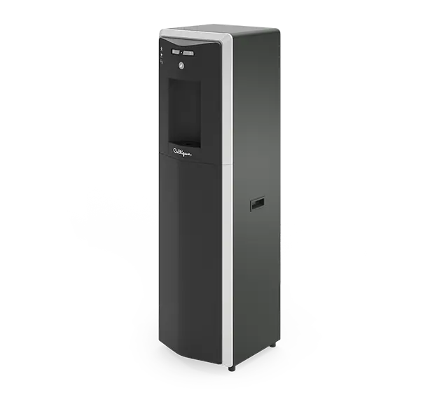

Mains-Fed Water Cooler
Culligan C2 Firewall® RO Water Dispenser
Leitungsgebundener Direct-Flow-RO-Wasserspender für bis zu 30 Nutzer mit Firewall®-UVC-Schutz und wahlweise kaltem, raumtemperiertem oder heißem Wasser.
Preis auf Anfrage
Technische Daten
| Nutzerbereich | 1–30 Personen |
| Filtration | Direct-Flow-Umkehrosmose |
| Hygiene | Firewall® UVC; laut Hersteller 99,99 % Schutz vor Viren und Bakterien |
| Wasseroptionen | Kalt + raumtemperiert oder kalt + heiß |
| Vorratstank | Tankfreies RO-System |
| Bedienung | Tasten; optionales berührungsloses IR-Modul |
| Installation | Festwasseranschluss |
| Höhe | 1.024 mm |
| Breite | 349 mm |
| Tiefe | 363 mm |
| Beschaffung | Kauf oder Miete; individuelles Angebot |
| Service | Installation und Wartung verfügbar |
| Einsatz | Büro, Gewerbe und öffentliche Bereiche |
Datenhinweis
Technische Angaben, Preis und Bildmaterial stammen von der verlinkten offiziellen Produktseite. Herstellerangaben wurden nicht unabhängig verifiziert.